Pipeline Dashboard: imdb_top
Summary Insights
Total Rows: 25
Total Columns: 5
Missing Values
| Column | Missing |
|---|
| rank | 0 |
| title | 0 |
| year | 0 |
| rating | 0 |
| link | 0 |
ML Analysis
Anomaly Detection
Cluster Distribution
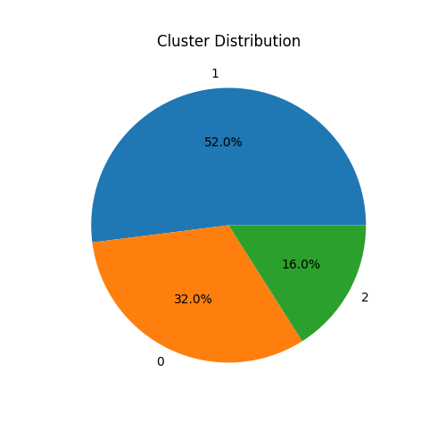Summary Statistics
| Column | Mean | Std | Min | Max |
|---|
| rank | 8.881784197001253e-18 | 1.0206207261596576 | -1.6641005886756874 | 1.6641005886756874 |
| year | 3.597122599785507e-15 | 1.0206207261596574 | -2.3874286731002807 | 1.4487043555107622 |
| rating | -3.9701575360595596e-15 | 1.0206207261596574 | -1.1059630927007091 | 2.478176559570095 |
Data Distributions
rank Distribution
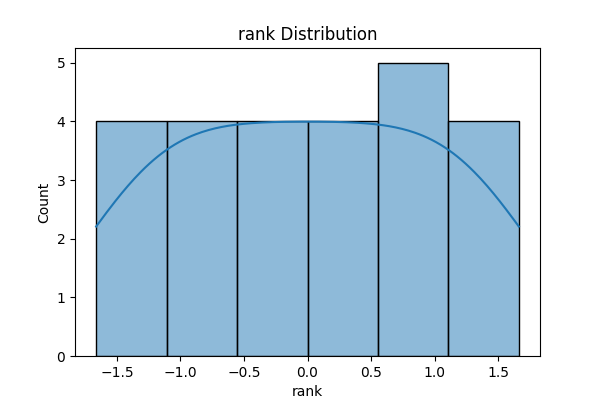rank Boxplot
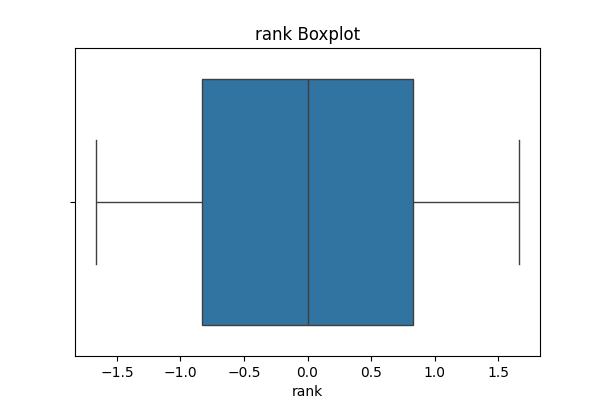year Distribution
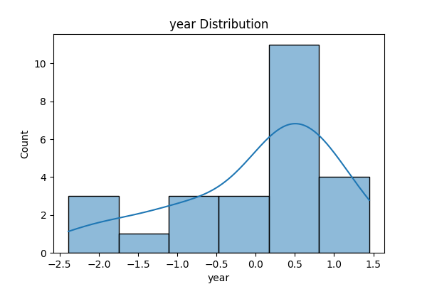year Boxplot
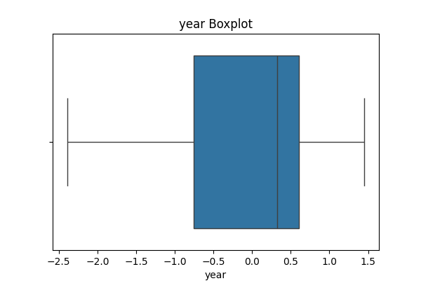rating Distribution
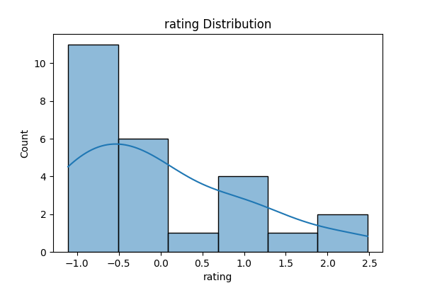rating Boxplot
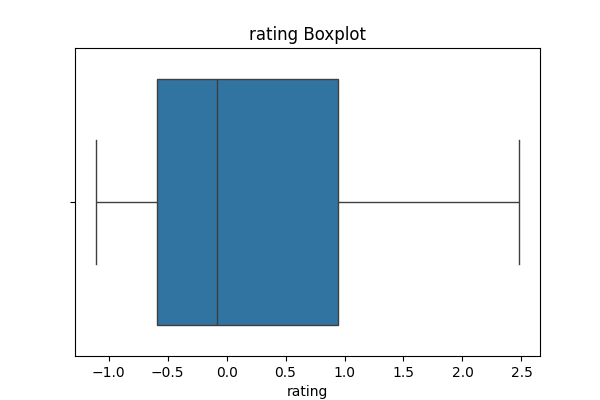anomaly Distribution
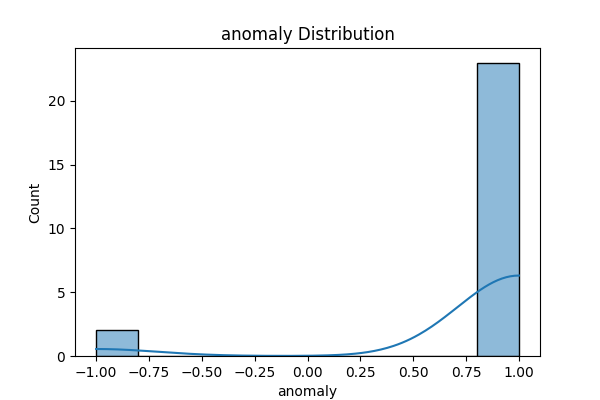anomaly Boxplot
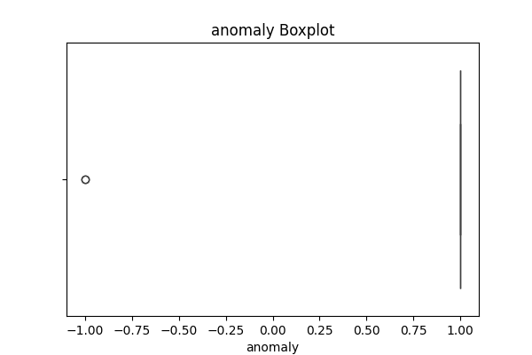cluster Distribution
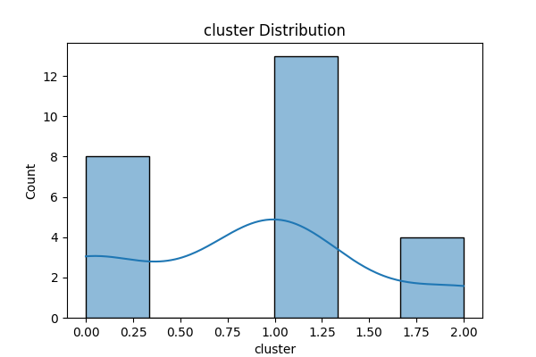cluster Boxplot
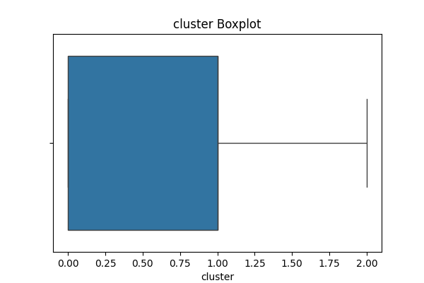Correlation Heatmap
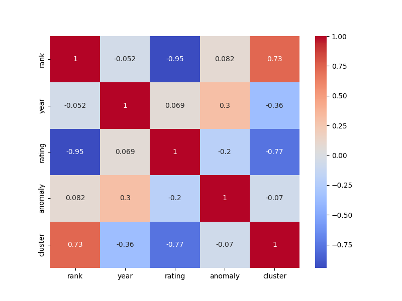